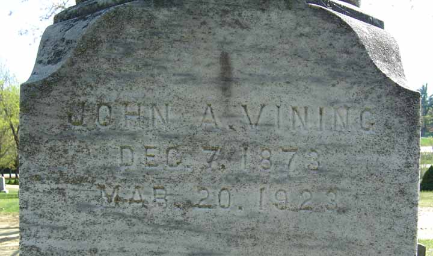
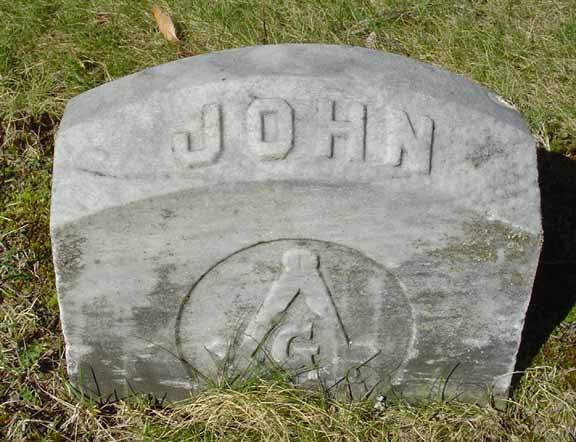

Death Data
Gravestones of John Albion Vining. The upper one is from one side of the family headstone of Edwin R. Vining and Ada L. (Morse) Vining. These stones are in Mount Auburn Cemetery in Auburn, Androscoggin County, Maine
